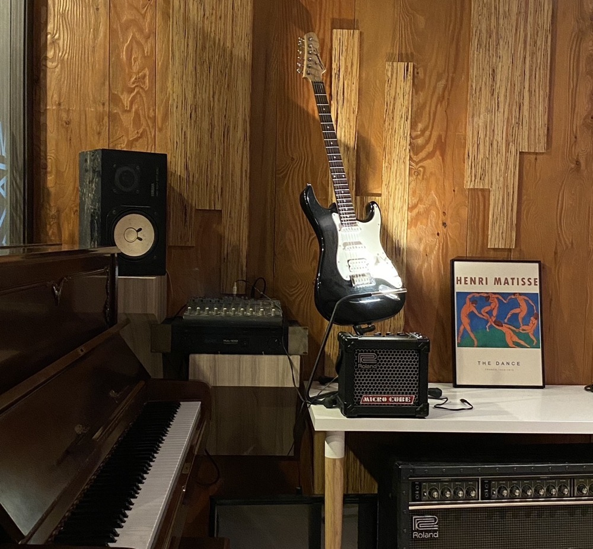
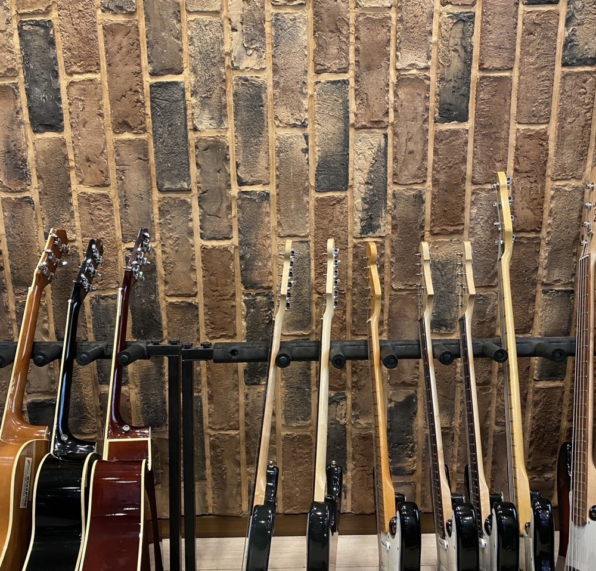
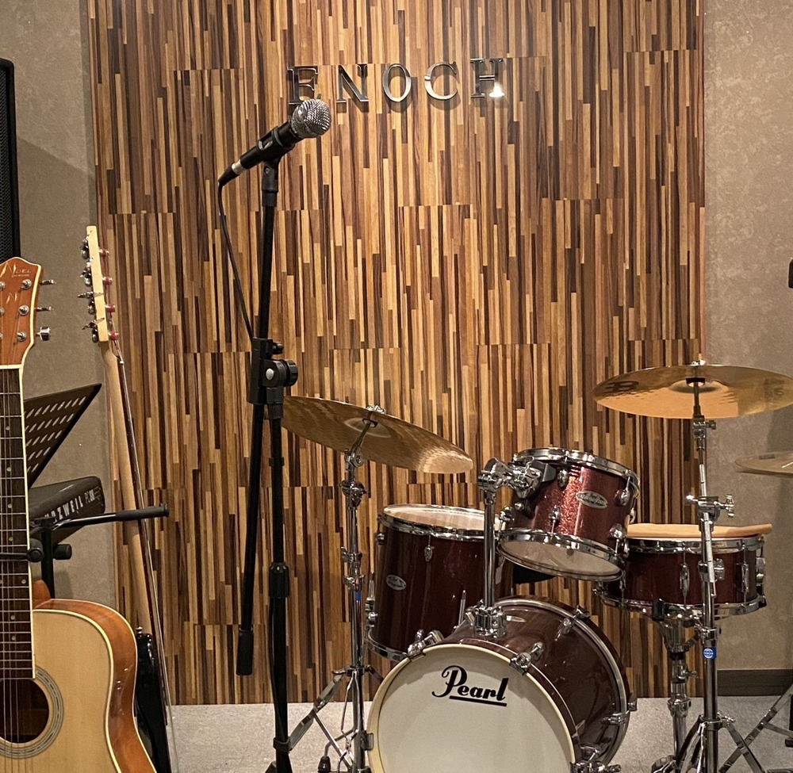

ENOCH MUSIC ACADEMYPRACTICE NOTE — RAINY DAY
비 오는 날의
연습
연습
우산 하나에 텀블러 챙겨서,
연습실 가는 길.
연습실 가는 길.
01

비 오는 날의 연습01 / 06




주소경기도 시흥시 은행로 157 2층
전화031 315 3666
운영평일 13:00–22:00 · 토 10:00–18:00 · 일요일 휴무
과목Vocal · Guitar · Drum · Bass · Piano · MIDI · 작곡 — 1:1 레슨
예약체험수업 네이버 플레이스 · 방문 상담 네이버 톡톡 · 카카오톡 채널 · 전화